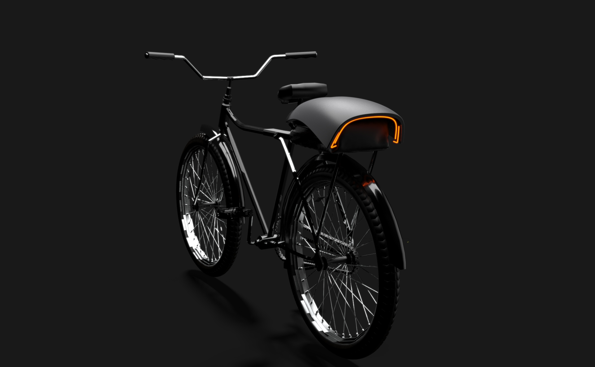
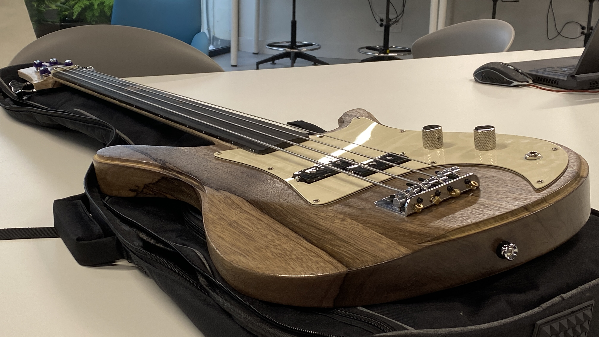
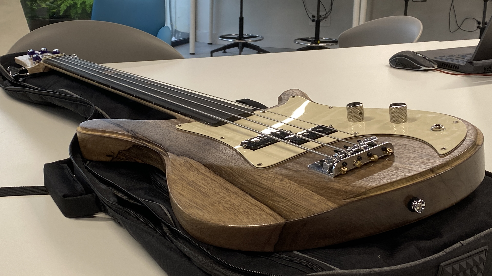
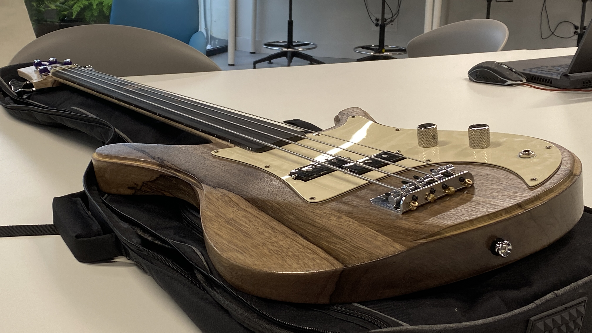

Hola.
Me llamo Gaizka Basterrechea. Nací en 2002 en Bilbao, y actualmente estudio diseño de producto. Algunos de mis intereses son el diseño (en su totalidad y especialmente el diseño de transporte y automoción), y también el arte, la arquitectura, la música, etc. Esta página es mi portfolio web, en el que muestro todo lo que he diseñado hasta ahora, incluyendo esta web y su sonido. Gracias por visitarlo.




 




.3)_FOTOH.jpeg)